Workshop: Arduino
Voor HCI moesten we opdrachten maken met Arduino. Arduino is een open-source elektronisch platform voor het maken van prototypes. Het bestaat uit een open-source micro-crontroller en een software om het in te programmeren. De microcontroller
kan input van sensoren ontvangen en output naar actuators verzenden.
De ochtend voor de workshop ben ik helaas op de spoedeisende hulp opgenomen. Hierdoor kon ik het niet samen met de klas de opdrachten maken. Daarom heb ik het in het weekend gedaan in het ziekenhuis, maar toen ik al één foto maken, kwam er al gelijk iemand naar mij toe dat het niet was toegestaan. Wel heb ik screenshots van de codes.
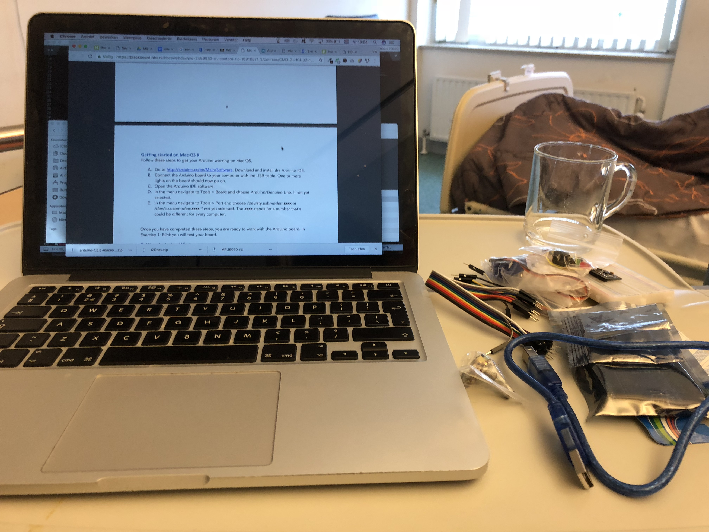
Voordat ik de opdracht kon uitvoeren, moest ik solderen. Hieronder ziet u mij dit doen.

exercise 3c
Voor opdracht drie werkte ik met twee soorten led lichtjes. De variabele voor de LED-pin had bij de eerste twee opdrachten de naam LED-BUILTIN. Dat is een bijnaam voor de pin 13 dus in plaats van LED-BUILTIN te gebruiken heb ik deze vervangen met 13. Vervolgens heb ik een tweede LED aangesloten (de gele) en die is verbonden aan de Arduino pin 12. Vervolgens heb ik de lichten uit en aan laten gaan door HIGH en LOW te gebruiken. Daarna heb ik er voor gezorgd dat groen twee keer zo snel knippert als geel. Door de loop in de code wordt hij elke keer weer opnieuw gerund ook zit er een delay in de code en deze zorgt ervoor dat het knipperen 1 seconde wacht.
De code: 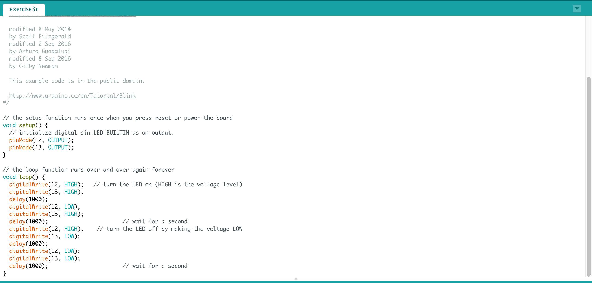
exercise 4c
Het is ook mogelijk om de helderheid van de LEDs te veranderen naast dat je ze alleen maar aan en uit zet. Dit kan doormiddel van de anologWrite () functie. Je kan dan een LED helemaal uitdoen door 0 of juist op zijn helderst 255. Niet alle pinnen op het bord kunnen dit. Het moet een pin zijn die geschikt is voor Pulse Width Modulation. Zo’n pin kan zich gedragen alsof hij gedeeltelijk aanstaat en normaal kan een pin alleen maar uit of aan. Welke pinnen dat zijn kun je zien op bet bord zelf. Eerst heb ik de pins op de Arduino verandert zodat het Pulse Width Modulation ondersteunt. Ik heb gekozen voor de pin 9 en 10. Vervolgens heb de code van de handleiding erin gezet wat er voor zorgt ervoor dat de groene LED wisselt tussen aan en uit en dat gele LED wisselt tussen helemaal aan en half aan. Vervolgens heb ik de void loop meegemaakt en er een for loop ingezet wat ervoor zorgt dat dat de LEDS compleet uit naar complot aan vervagen. Vervolgens heb ik analogWrite(yellowLed, 255-brightness) in de for-loop gezet waar de LED steeds van tegenovergesteld van elkaar vervagen
De code:
exercise 6c
Voor deze opdracht maak ik gebruik van de potentiometer. De potentiometer geeft een een analoge ingang naar de Arduino. de middelste lug heb ik midden aangesloten op de analoge input pin (A0) deze gaat de waarde lezen. De andere twee buitenste moet één verbonden zijn aan de 5v en de ander gaat naar GND. Vervolgens heb ik de code van opdracht 5 gebruikt. Eerst heb ik ervoor gezorgd dat de sensor value wordt geschaald naar 0 tot 255 vervolgens heb ik een berekening in de code gezet. Voor deze calculatie moet de variabele sensorValue een float zijn en daarom heb ik het data type verandert. Vervolgens heb ik ervoor gezorgd dat de correcte voltage naar de LEDs worden gestuurd. Vervolgens heb ik de functie map toegepast en heb ik de code zo aangepast dat een LED invaagt en de andere uitvaagt.
De code: 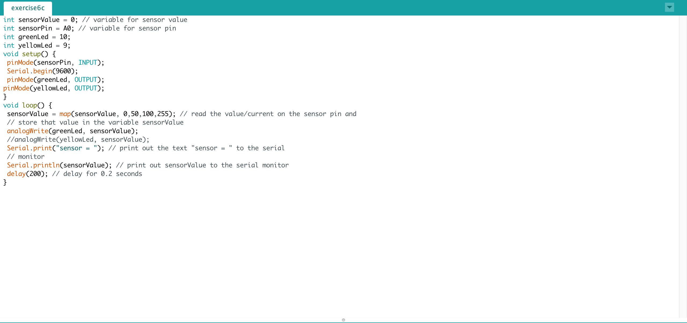
Exercise 7
Voor deze opdracht heb ik de sensor Light Dependent Resistor (LDR) gebruikt. Dit is een gevoelige resustor die hoeveelheid ligt meet. Ik deze sensor gebruiken om de LEDs te laten dimmen. Ik heb een poot naar de 5V verbonden en de ander op pin A0. De poot die verbonden is aan A0 heb ik vervolgens ook aan de 10kΩ resistor verbonden. De andere kant van de resustor heb ik verbonden aan GND. Vervolgens heb ik de codegebruik van 6A en heb de lijn uitgeschakeld die de sensor value scaled. Als ik de Serial Monitor nu open zie de hoeveelheid ligt die de LDR binnen krijgt in een vorm van een getal. Vervolgens heb ik de lijn die ik had uitgezet weer aangezet zodat sensor waarde weer op de juiste waarde worden gescaled.
De code: 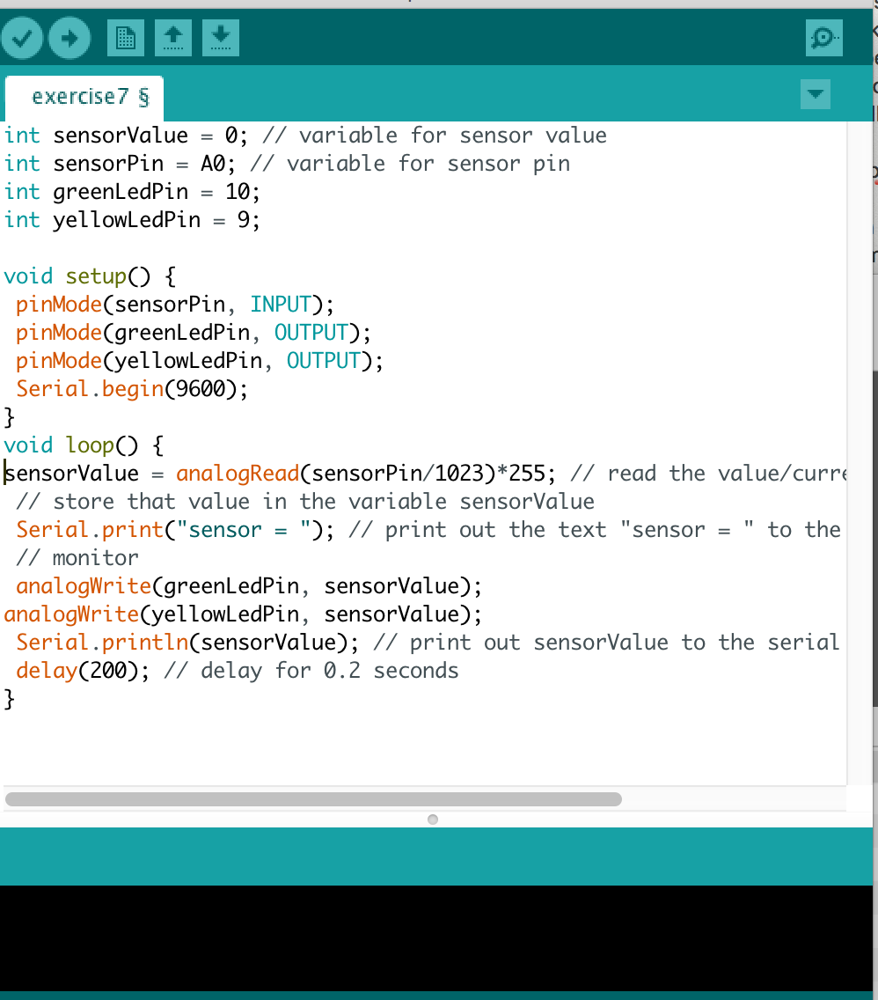
exercise 8b
Voor deze opdracht wordt het Arduino wordt gebruikt als een input device voor mijn computer door een verbinding te maken met Arduino en Processing. Voor deze opdracht wordt de input van de vorige opdracht door de Arduino tot een Processing sketch doorgevoerd. Vervolgens heb ik de code van de gebruiksaanwijzing van Ardano gekopieerd en heb ik de Processing code in een nieuw scherm geplaatst. De grote van de cirkel die ik zie wordt bepaald door de input van sensor. Vervolgens heb ik de Processing code bestudeert wat er ingewikkeld uit zag en ik heb de code aangepast zodat ik de sensor waarde op een andere manier kan gebruiken. Ik heb gekozen om voor een bewegende vierkant te gaan.
De code:
Exercise 9f
Voor deze opdracht wordt er gebruik van de sensor button. Een button werkt door een circuit te sluiten en dit kan opgemerkt door Arduino. In deze opgave gebruikten we een voorbeeld van de Arduino website, maar dat circuit gebruikte geen LED. Dus daarom heb ik circuit uit de handleiding gebruikt. Tijdens deze opgave heb ik de code korter gemaakt.
De code 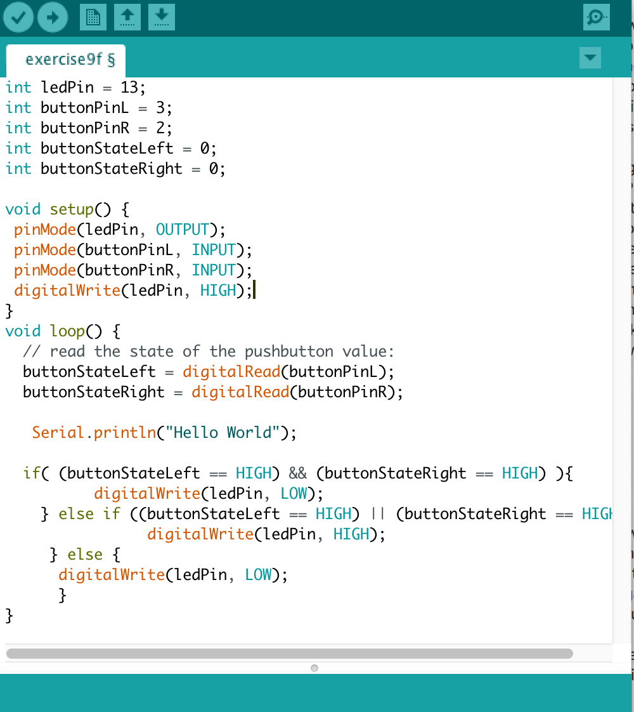Exercise 10b
Voor deze opdracht moest er gebruik worden gemaakt van een Servomotor. Een servomotor zijn motors die tot een nauwkeurige positie bewegen. Eerst heb ik de servo verbonden aan mijn Arduino bord. Het bruine draadje daar naar GND, de rode naar 5V en de oranje gaat naar pin 9 vervolgens heb de code uit de handleiding gehaald en geupload. Eerst gebeurde er niks, maar ik had de code niet goed overgenomen. Toen hij het wel deed ging de servo van links naar rechts. Helaas kwam er toen een wat boze zuster naar mij toe dat ik moest stoppen. Wel heb ik nog wat aan de code aangepast zodat de servo een andere beweging maakt, maar ik heb hem niet kunnen testen.
De code 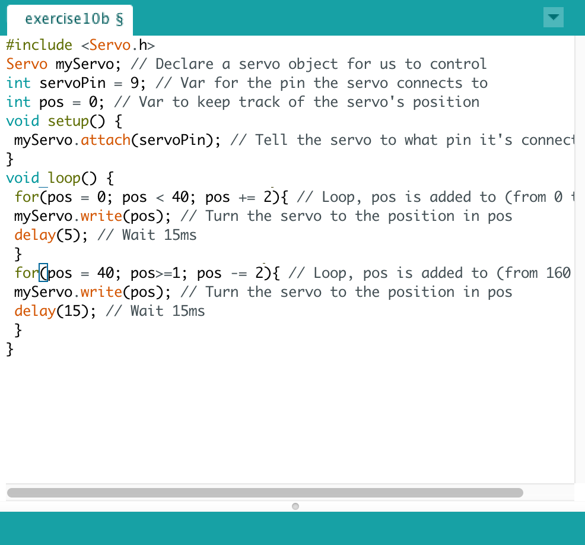
Exercise 11b
De volgende dag ging ik weer aan de slag ook al was het wel lastig met misschien een boze zuster opeens langs komt en natuurlijk de ruimte, maar gelukkig lag ik vandaag alleen op een kamer dus dat scheelde. Voor deze opdracht moeten de buttons de servo beheersen hiervoor heb ik de onderstaande code gebruikt. Ik heb ervoor gezorgd dat de variabel niet groter dan dan 160 is of kleiner dan 0. Toch liep ik de hele tijd vast en lukte het maar niet. Wel heb ik de code die ik tot dan toe had.
De code 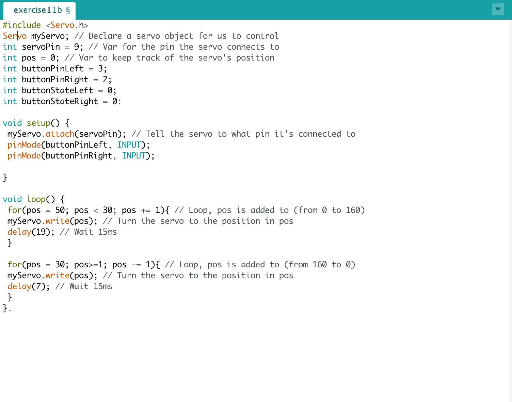
Exercise 12b
Het Arduino bord kan ook muziek produceren als je hem met een speaker verbindt. Dit gebeurd met de speaker die Piezo genoemd wordt. Tijdens het verbinden van de speaker heb ik een 220Ω resistor gebruikt. De speaker heeft een polariteit die is aangeven staat met een + naast een van de lugs. Het plusteken heb ik naar de Arduino’s pin 8 gedaan. Ik heb de code uit de handleiding gehaald. De functie tone() maakt de toon. De eerste parameter is de functie bepaald welke pin de speaker mee is verbonden. De tweede parameter staat voor de frequente en dit is in hertz. De laatste parameter is in millisecondes en bepaalt de looptijd van de toon. Vervolgens heb ik nog wat tonen toegevoegd.
De code 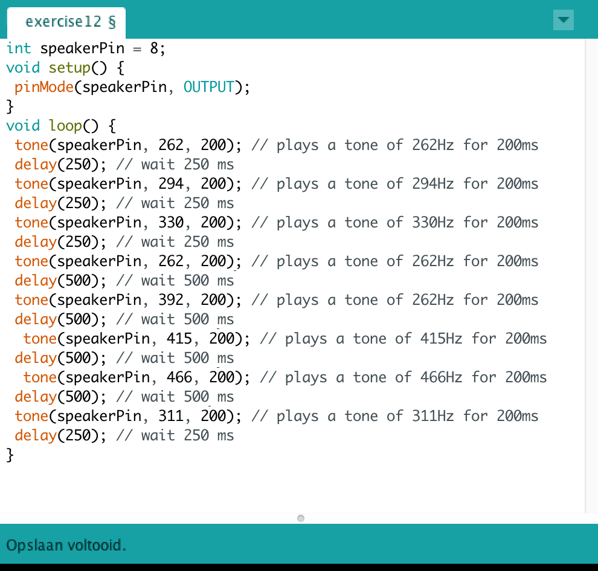
Exercise 13E
Voor de volgende opdracht hebben we gebruik gemaakt van een accelerometer. Een accelerometer kan G-krachten meten. Dit doen ze meestal met drie verschillende richtingen: de X,Y en Z richtingen. Helaas kan een accelerometer slecht rotatie meten en daarom wordt het meestal gebruikt met een Gryroscoop. Een gyroscoop meet rotatie en doet dat ook in 3 richtingen. Zo’n gecombineerde sensor, Intertial Measurement Unit, meet dus 6 waardes. Eerst heb ik mijn IMU verbonden zoals op de afbeelding in de handleiding vervolgens heb ik twee libraries gedownload. Dit heb ik uitgetest. Na de deel opdrachten kwam ik dan eindelijk aan bij opdracht 13e ik heb de code van 13d gebruikt en aangepast.
De code 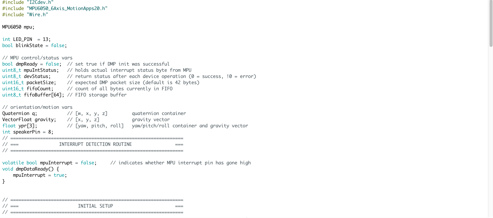 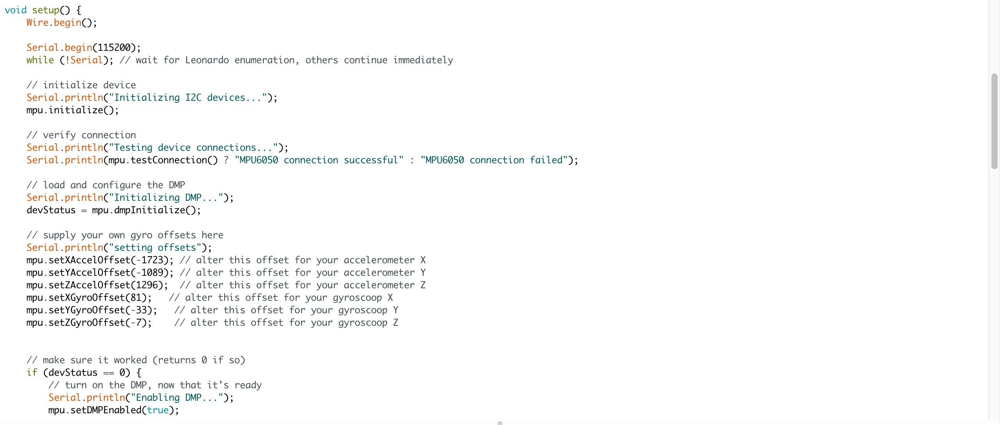 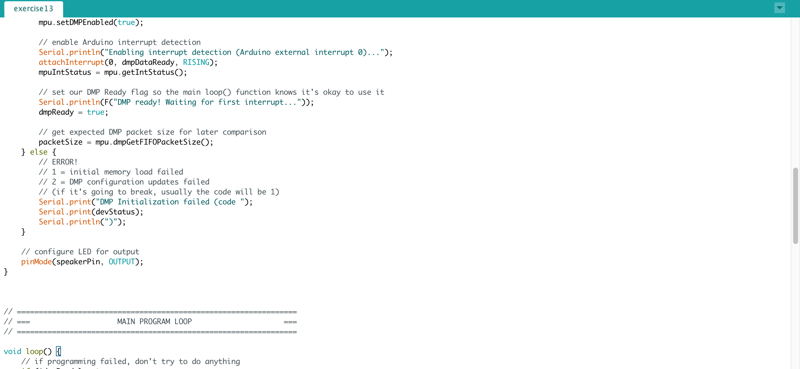 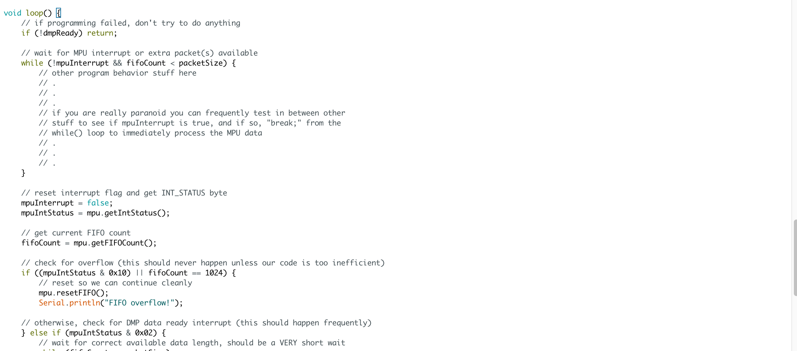 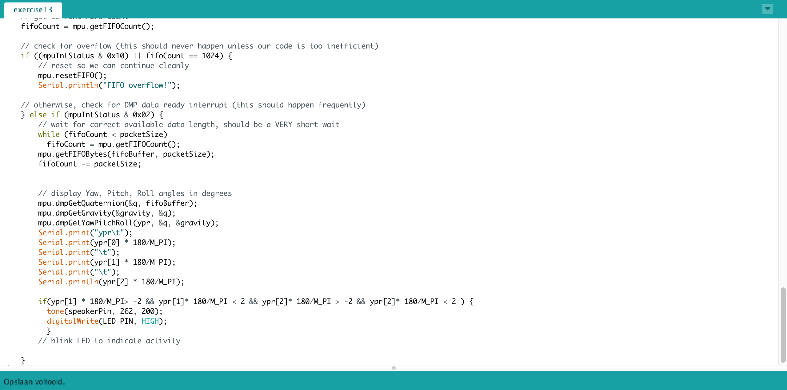